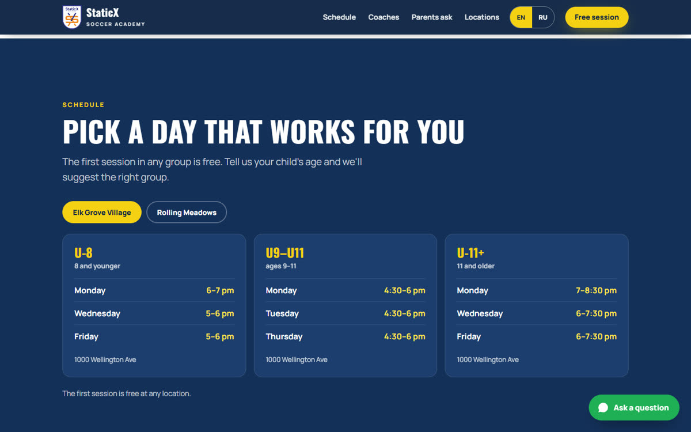

StaticX Soccer Academy, Чикаго: сайт на 2 мови із записом на пробне тренування
- 5 днів
- від брифу до запуску
- 5 із 5
- тестових заявок дійшли
- 2 мови
- англійська і російська
Раніше батьки питали про пробне тренування в Instagram і WhatsApp, і записи губилися в переписці. Тепер вони записують дитину самі на сайті. Заявка приходить власнику в Telegram з підказкою, яку локацію запропонувати за віком дитини, і лягає в таблицю. Домен і Google Search Console підключені.